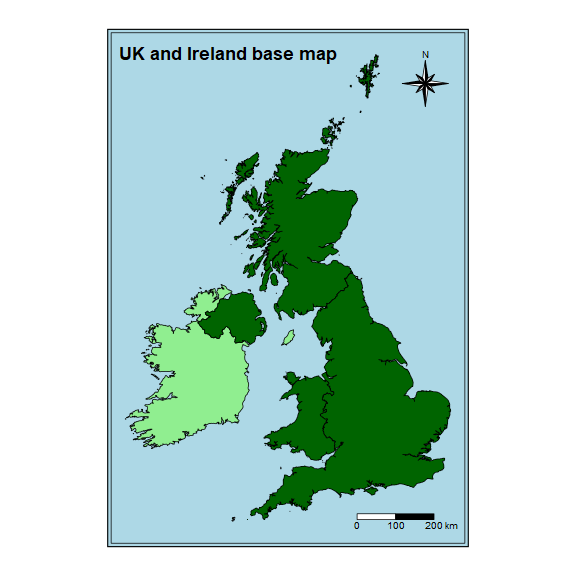

R/spatial.R
uk_ireland_base_map.RdA simple features data frame of the British and Irish coastline derived from the Oil and Gas Authority's OGA and Lloyd's Register SNS Regional Geological Maps (Open Source) layer.
uk_ireland_base_map
A simple feature data frame with 6 rows and 3 variables
The name of the country.
Is the country in the United Kingdom or not.
The country's polygon geometry.
Created by Owen Boswarva, 2018-07-04. Downloadable from DataAdaptive
UKIrelandIoM_DECC_OSGB36 This dataset contains generalised boundaries for the four countries of the UK, the Isle of Man, and Ireland. The dataset is suitable as a reference for simple background mapping, and is re-usable under the Open Government Licence v3.
This boundary dataset was created from a subset of the DECC_OFF_Coastline_ED50 layer published by the Oil & Gas Authority in the following data package:
OGA and Lloyd's Register SNS Regional Geological Maps Open Data.
The data has been converted from ED50 to OSGB36 and numerous individual polygons have been merged to create a set of polygons for each of Scotland, England, Wales, Northern Ireland, the Isle of Man, and Ireland.
Open Government Licence v3 (OGL) Attribution: Contains data © 2017 Oil & Gas Authority

suppressPackageStartupMessages({ library(store) suppressWarnings({ library(here) library(fs) library(tmap) }) }) # create temp directory dir_create(path(tempdir(), "figures")) # save UK Ireland base map as shape file uk_ireland_base_map %>% sf::st_write(path(tempdir(), "uk_ireland_base_map.shp"), delete_layer = TRUE, quiet = TRUE) # create UK Ireland base map image uk_ireland <- tm_shape(uk_ireland_base_map) + tm_fill(col = "uk", style = "cat", palette = c("lightgreen", "darkgreen")) + tm_borders(col = "black") + tm_compass(type = "8star", size = 4, position = c(0.8, 0.85)) + tm_scale_bar(breaks = c(0, 100, 200), text.size = 0.8, position = c(0.68, 0.02)) + tm_layout(bg.color = "lightblue", frame.double.line = TRUE, inner.margin = 0.05, outer.margin = 0.05, legend.show = FALSE, title = "UK and Ireland base map", title.size = 1.5, title.fontface = "bold") # save UK Ireland base map image suppressMessages({uk_ireland %>% tmap_save(path(tempdir(), "figures", "uk_ireland_base_map.png"), type = "cairo-png", width = 8, height = 8, units = "in", dpi = 72)}) # move figure from temporary directory file_move(path(tempdir(), "figures", "uk_ireland_base_map.png"), here("man", "figures", "uk_ireland_base_map.png"))#> Error: [ENOENT] Failed to move 'C:/Users/GRAHAM~1/AppData/Local/Temp/Rtmpk1Kwux/figures/uk_ireland_base_map.png'to 'C:/Users/Graham French/AppData/Local/Temp/RtmpUF1nMv/file4adc1e77ad1/man/figures/uk_ireland_base_map.png': no such file or directory